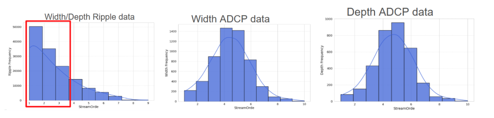
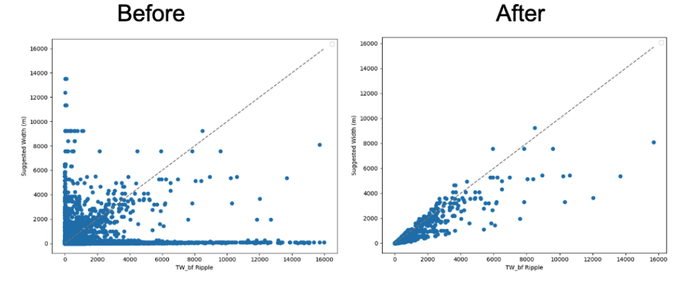
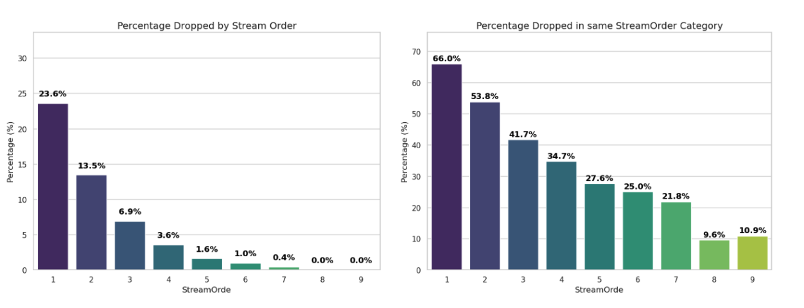
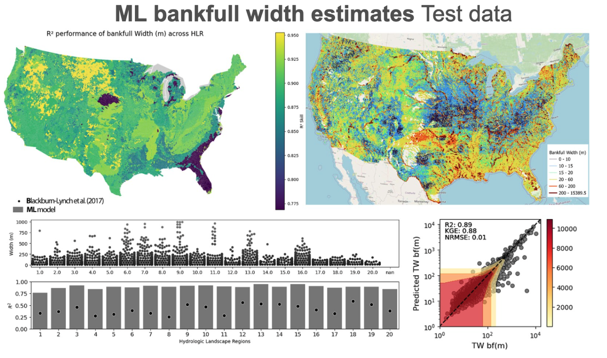
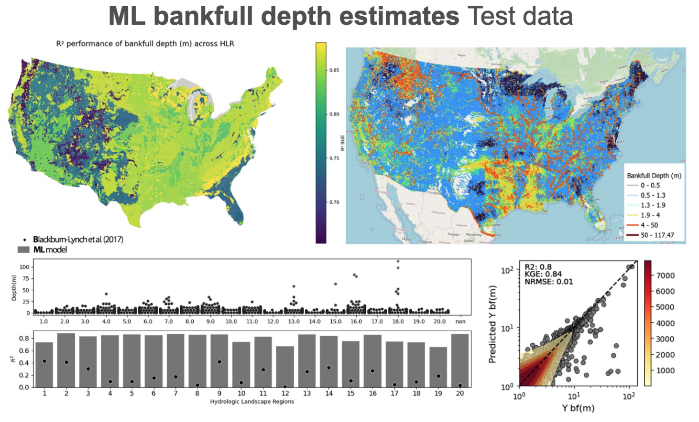
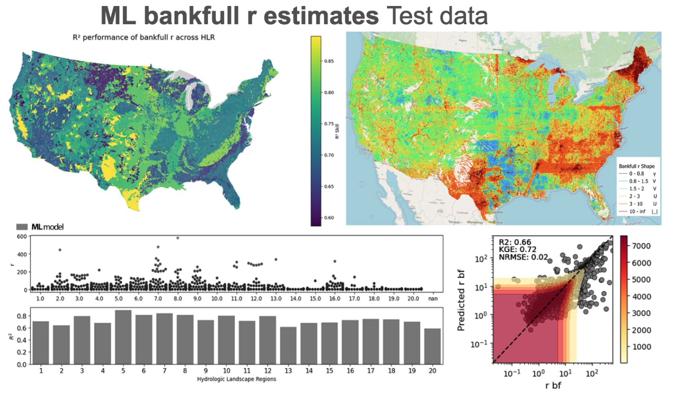
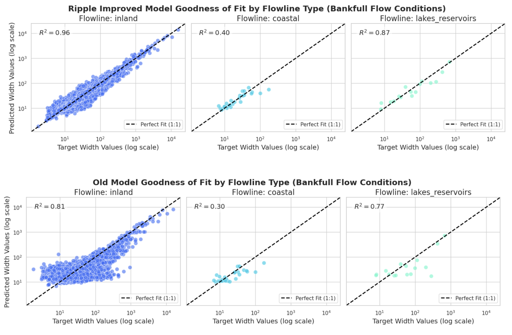
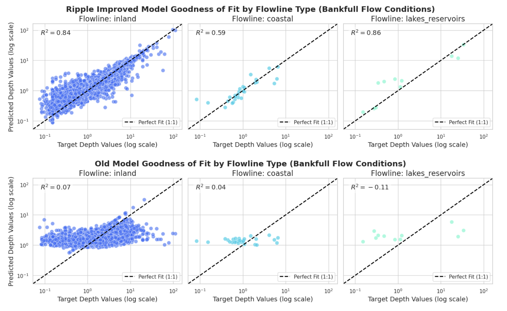
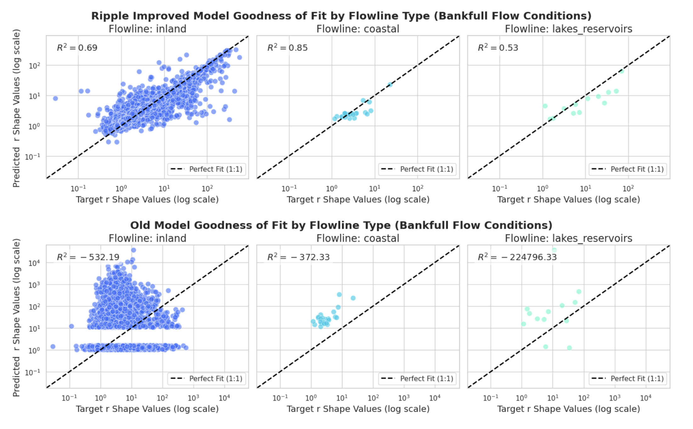

# Load required packages
library(dplyr)
library(sf)
## 1. Elevation Smoothing Utility
# - Purpose: Smooth noisy elevation values within a transect.
# - How it works: If an elevation value exceeds a threshold, it’s replaced with the average of its neighboring values (unless it’s at the edge, then it’s copied from one neighbor).
# - Why: Helps remove spikes or artifacts in cross-section profiles, which could bias geometry-based calculations.
clean_elev <- function(elev_vec, threshold = 100) {
for (i in which(elev_vec > threshold)) {
if (i > 1 && i < length(elev_vec)) {
elev_vec[i] <- mean(c(elev_vec[i - 1], elev_vec[i + 1]), na.rm = TRUE)
} else if (i == 1) {
elev_vec[i] <- elev_vec[i + 1]
} else if (i == length(elev_vec)) {
elev_vec[i] <- elev_vec[i - 1]
}
}
elev_vec
}
## 2. Channel Area Calculation
# - Purpose: Compute the cross-sectional channel area from a transect up to a given depth.
# - How it works: Uses the AUC (Area Under Curve) difference between the water surface and the bed profile.
# - Why: The result is used to calculate the hydraulic radius and describe the channel’s shape.
.findCA <- function(df, depth) {
Y <- NULL
t <- filter(df, Y <= depth)
suppressWarnings({
x <- pmax(
0,
DescTools::AUC(x = t$x, y = rep(depth, nrow(t)), absolutearea = FALSE) -
DescTools::AUC(x = t$x, y = t$Y, absolutearea = FALSE)
)
})
ifelse(is.na(x), 0, x)
}Data Processing Steps for RiverML
Using FEMA BLE models to inform ML estimates of channel size and shape
Overview
This document processes a collection of hydraulic model outputs (in this case, FEMA BLE submodels stored as .gpkg files) to extract and compute representative channel cross-section (XS) characteristics for each river reach within a hydrologic unit. It combines geospatial data manipulation with hydrologic geometry analysis to generate useful channel metrics for modeling or further analysis.
Step 1: Preparing Input Data.
This example processes elevation profile data from FEMA BLE submodels, extracting key cross-sectional (XS) geometry attributes for hydraulic analysis. The overall goal is to compute summary statistics and representative cross-sections per stream reach in the reference fabric, so that it can be used within the existing riverML framework for predicting channel size and shape.
Load Packages and Define Helper Functions
Reference Data Paths and Setup
# Set file paths
## v3.0 reference fabric ...
ref_path <- "/Users/mikejohnson/hydrofabric/v3.0/reference_fabric.gpkg"
## Full MIP archive shared with us ...
fema <- '/Volumes/MyBook/mip_full_collection/'
# In the full example, we would loop over all ble_model directories ...
dir <- glue::glue("{fema}/ble_05119_Pulaski/submodels")
# Discover and annotate submodel files ...
# - Purpose: Traverse a directory of FEMA BLE submodels to gather all .gpkg files.
# - Result: A table where each row contains metadata (e.g., reach name, file path) for a submodel.
subs <- list.files(dir, recursive = TRUE, pattern = ".gpkg$", full.names = TRUE) |>
as.data.frame() |>
setNames("file") |>
mutate(
reach = gsub('.*/', '', file),
reach = gsub('.gpkg', '', reach),
name = gsub('/submodels', "", gsub(fema, "", dir))
)
glimpse(subs)Rows: 184
Columns: 3
$ file <chr> "/Volumes/MyBook/mip_full_collection//ble_05119_Pulaski/submodel…
$ reach <chr> "15312271", "15312277", "15312287", "15312297", "15312309", "153…
$ name <glue> "/ble_05119_Pulaski", "/ble_05119_Pulaski", "/ble_05119_Pulaski…Process Each Submodel with Transect Processing Loop
For each submodel: - Read the cross-sections (XS) and transform them into a common CRS (EPSG:5070).
For each transect: - Parse and clean the raw string of elevation points. - Identify left/right bank extents. - Subset the relevant portion and smooth the elevation. - Filter out degenerate transects (e.g., no real depth). - Compute metrics: - Ym: channel depth - TW: top width - A: channel area - r: Dingmans R coefficient - Save it as a geometry object with selected metadata. - Also extracts metadata like the coordinate system units and stores them for each reach.
subs_data <- list()
for (v in 1:nrow(subs)) {
message("\tProcessing ", basename(subs$file[v]), " (", v ," in ", nrow(subs), ")")
# Read XS layer from submodel and transform to projected CRS
transects <- st_transform(read_sf(subs$file[v], 'XS'), 5070)
ll <- list()
for (j in 1:nrow(transects)) {
# Parse and clean station-elevation profile
cleaned <- gsub("\\[|\\]|\\(|\\)", "", transects$station_elevation_points[j])
cleaned <- strsplit(cleaned, ", ")[[1]]
df <- as.data.frame(matrix(as.numeric(cleaned), ncol = 2, byrow = TRUE))
names(df) <- c("x", "Y")
# Extract left/right bank stations
pins <- transects$bank_stations[j] %>%
gsub("\\[|\\]|\\'", "", .) |>
strsplit(",\\s*") |>
unlist() |>
as.numeric()
# Subset profile to only between banks and clean elevation
result <- dplyr::filter(df, dplyr::between(x, pins[1], pins[2]))
result$Y <- clean_elev(result$Y)
if (nrow(result) <= 2 | diff(range(result$Y)) < .25) {
warning("No channel in transect ", j, " for ", basename(subs$file[v]))
} else {
# Compute channel geometry attributes
result$Ym <- max(result$Y) - min(result$Y) # channel depth
result$TW <- max(result$x) - min(result$x) # top width
result$flowpath_id <- subs$reach[v]
result$river_station <- transects$river_station[j]
result$model = subs$file[v]
result$A <- .findCA(result, max(result$Y)) # channel area
result$r <- result$A / ((result$Ym * result$TW) - result$A) # Dingmans R shape
result$domain <- subs$name[v]
# Join metadata and convert to spatial
ll[[j]] <- dplyr::distinct(dplyr::select(result, -x, -Y)) |>
slice(1) |>
left_join(
select(transects[j,],
river_station, river_reach_rs,
source_river, source_reach, source_river_station, station_elevation_points, bank_stations ),
by = c('river_station')
) |>
st_as_sf()
}
}
# Try reading metadata layer for units
meta = suppressWarnings({
tryCatch({read_sf(subs$file[v], 'metadata') |> filter(key == "units")},
error = function(e) { data.frame(value = NA) })
})
# Create CRS and units metadata
meta = meta |>
mutate(flowpath_id = subs$reach[v],
epsg = st_crs(read_sf(subs$file[v], 'XS'))$epsg,
crs_units = st_crs(read_sf(subs$file[v], 'XS'))$units) |>
select(flowpath_id, metdata_units = value, epsg, crs_units)
fin = bind_rows(ll)
# Store only if valid data
if(nrow(fin) > 0 & nrow(meta) > 0) {
subs_data[[v]] <- left_join(fin, meta, by = "flowpath_id")
} else {
subs_data[[v]] <- NULL
}
}Merge all data
All cleaned and processed transect data are combined into one table, now representing all relevant reaches in the HUC.
huc_xs <- tibble(data.table::rbindlist(subs_data)) |>
st_as_sf()
glimpse(huc_xs)Rows: 1,344
Columns: 18
$ Ym <dbl> 1.1250000, 1.1525000, 1.6121484, 1.8548437, 1…
$ TW <dbl> 40.02, 41.57, 70.00, 50.22, 40.02, 40.56, 40.…
$ flowpath_id <chr> "15312271", "15312271", "15312277", "15312277…
$ river_station <dbl> 1, 2, 1, 2, 3, 1, 2, 3, 4, 5, 6, 7, 1, 2, 1, …
$ model <chr> "/Volumes/MyBook/mip_full_collection//ble_051…
$ A <dbl> 25.32970, 28.43397, 77.29426, 61.00897, 25.32…
$ r <dbl> 1.2862413, 1.4599895, 2.1738658, 1.8981500, 1…
$ domain <chr> "/ble_05119_Pulaski", "/ble_05119_Pulaski", "…
$ river_reach_rs <chr> "littleck Reach 1 1", "littleck Reach 1 2", "…
$ source_river <chr> "littleck", "littleck", "littleck", "littleck…
$ source_reach <chr> "Reach 1", "Reach 1", "Reach 1", "Reach 1", "…
$ source_river_station <dbl> 27643.05000, 30516.51000, 22751.30000, 25430.…
$ station_elevation_points <chr> "[(0.0, 421.34), (10.0, 418.82), (19.99, 417.…
$ bank_stations <chr> "['2382.91', '2422.93']", "['1813.19', '1854.…
$ metdata_units <chr> "English", "English", "English", "English", "…
$ epsg <int> 3434, 3434, 3434, 3434, 3434, 3442, 3442, 344…
$ crs_units <chr> "us-ft", "us-ft", "us-ft", "us-ft", "us-ft", …
$ geom <LINESTRING [m]> LINESTRING (341922.1 133235..., LI…#mapview::mapview(st_as_sf(huc_xs))Extract Representative Cross Section
Each reach may have multiple transects. This code a representative transect per reach: - Takes the median one (by river station order). - Computes mean values for width, depth, and shape ratio. - Keeps geometry and other context attributes from that central transect.
# Compute representative XS features per flowpath
representive_features <- huc_xs |>
tidyr::drop_na(flowpath_id) |>
dplyr::group_by(flowpath_id) |>
arrange(river_station) |>
dplyr::summarise(
r = mean(r[is.finite(r)]),
TW = mean(TW),
Y = mean(Ym),
geom = geom[ceiling(n()/2)],
source_river_station = source_river_station[ceiling(n()/2)],
river_station = river_station[ceiling(n()/2)],
model = model[ceiling(n()/2)])
nhd_meta <- nhdplusTools::get_vaa(c('ftype', 'streamorde')) |>
mutate(comid = as.character(comid))
out_xs <- representive_features |>
left_join(nhd_meta, by = c('flowpath_id' = 'comid'))
glimpse(out_xs)Rows: 170
Columns: 10
$ flowpath_id <chr> "15312271", "15312277", "15312287", "15312297", "…
$ r <dbl> 1.3731154, 1.7860857, 3.3466956, 1.8001889, 2.223…
$ TW <dbl> 40.79500, 53.41333, 51.90571, 42.78500, 63.75250,…
$ Y <dbl> 1.1387500, 1.5306641, 1.2434375, 1.4540625, 1.344…
$ geom <LINESTRING [m]> LINESTRING (341922.1 133235..., LINEST…
$ source_river_station <dbl> 27643.0500, 25430.9000, 2511.1050, 37525.9500, 21…
$ river_station <dbl> 1, 2, 4, 1, 2, 2, 1, 6, 7, 1, 3, 1, 4, 3, 9, 1, 3…
$ model <chr> "/Volumes/MyBook/mip_full_collection//ble_05119_P…
$ ftype <chr> "StreamRiver", "StreamRiver", "StreamRiver", "Str…
$ streamorde <dbl> 1, 2, 1, 1, 2, 2, 2, 1, 3, 3, 3, 3, 2, 1, 1, 2, 1…ref_fab <- read_sf(ref_path, "flowpaths", wkt_filter = st_as_text(st_as_sfc(st_bbox(st_union(huc_xs)))))
#mapview::mapview(out_xs, color = "red") + ref_fabSummary
–> Inputs: FEMA BLE submodels as .gpkg files containing cross-section data, Reference hydrofabric (flowlines)
–> Outputs: Processed cross-section attributes per reach, One representative XS per flowpath, Joined metadata from hydraulic units and NHDPlus
–> Clean, analysis-ready datasets
–> The full looped run can be found here
Step 2: Training Machine Learning (ML) model
Here we outline the results from using new RAS information to update channel dimension characteristics in the riverML model first shared here.
The goal is to enhance CONUS-wide estimates of bankfull river channel geometry by training ML models on a Ripple and HydroSWOT combined datasets. The models predict three key parameters that provide a simplified yet comprehensive representation of channel shape: top-width (TW), mean depth (Y), and a shape (r).
Preprocessing:
The initial dataset was significantly expanded by incorporating new Ripple RAS data, increasing the potential training instances from ~3,000 (HydroSWOT) to ~70,000.
Our reprocessing steps included:
Parameter Extraction: Bankfull TW and Y were extracted directly from RAS models (see step 1). All measurements were unified in units via projection transformation / scaleing where needed.
Spatial Aggregation: Data points were averaged to the river reach scale to align with the hydrofabric, reducing the dataset to ~140,000 unique reaches. This new data provides substantially greater coverage in the central U.S. (especially Texas) and critically expands the representation of low-order streams (orders 1-3), Coastal domain, lakes, and reservoirs which were sparse in the original HydroSWOT dataset.

Quality Control and Filtering: A comparison between RAS-derived top-widths and a comprehensive, satellite-derived reference dataset (data fusion TW; dfTW) revealed significant discrepancies. To remove anomalous data points, a filtering threshold was applied:
0.75 ✕ dfTW ≤ rasTW ≤ 5 ✕ dfTW.

This essential cleaning step reduced the dataset to ~70,000 high-confidence reaches. The majority of filtered data (~44%) originated from stream orders 1-3, which also exhibited the largest error magnitudes prior to cleaning.

ML Training
The filtered Ripple RAS data was combined with the HydroSWOT data. This final dataset was partitioned into 70% for training, 15% for validation, and 15% for testing. Three separate ML models were developed for TW, Y, and r. Cross-validation was employed to optimize hyperparameters and prevent overfitting. The trained models were then used to infer channel geometry for all ~2.7 million river reaches across the CONUS.
Results
The inclusion of diverse training data has markedly improved model performance and generalization.
Quantitative Performance: The models demonstrate excellent agreement with ground-truth values on the unseen test dataset, confirming their predictive skill. When evaluated against the test data, the new ML models show a significant improvement in skill for TW and Y across all Hydrological Landscape Regions (HLRs; bar plots) compared to the drainage area based Blackburn-Lynch (2017) equations used in the National Water Model (black dots within bar plots).
Improved Geographic and Typological Representation: The previous ML models lacked data for river reaches influenced by coastal zones, lakes, or reservoirs, where channel widening and depth profiles behave uniquely. The new models were trained on such reaches and use river classification added as a predictive feature, enabling more accurate estimates in these complex transition zones.
Qualitative Validation: Visual inspection of CONUS-wide maps of the predicted TW, Y, and r reveals coherent, large-scale fluvial patterns that align with known river characteristics across CONUS. This provides strong qualitative confidence that the models have successfully learned the underlying dynamics of river channel formation across different climates and landscapes.



Skill comparision to HydroSWOT base riverML
A comparison is conducted using unseen test data between the updated machine learning (ML) estimates from Ripple and the earlier HydroSWOT-derived channel characteristics at bankfull conditions. However, it is important to note that the definition of bankfull conditions differs between the HydroSWOT training dataset and Ripple RAS data. In HydroSWOT, bankfull is defined as a flood event with a 50% annual exceedance probability (AEP), whereas Ripple relies on RAS-based classification of bankfull. Consequently, this comparison is not strictly one-to-one but rather an approximation across the two datasets. The same principle applies to derivative variables such as channel top-width, depth, and shape.
We compare results across three categories of flowlines: Inland, Coastal, and Lakes/Reservoirs. The previous model exhibited lower accuracy in Coastal and Lakes/Reservoirs due to data limitations. In contrast, the updated Ripple dataset provides improved representation of lakes, reservoirs, and coastal areas. As expected, we observe notable improvements in these categories, as demonstrated below.
Width

Depth

Shape

It was found that the previously used quantile transformation resulted in a gap in model prediction between r = 2-9. This occurs because the transformation maps sparse data regions to very small quantile range and was remedied in updated iterations by substituting it with log transformation. This update alone is significant to the impacts of the current model.
Final Data Access
The final input data can be found here
The final predicted data can be found here